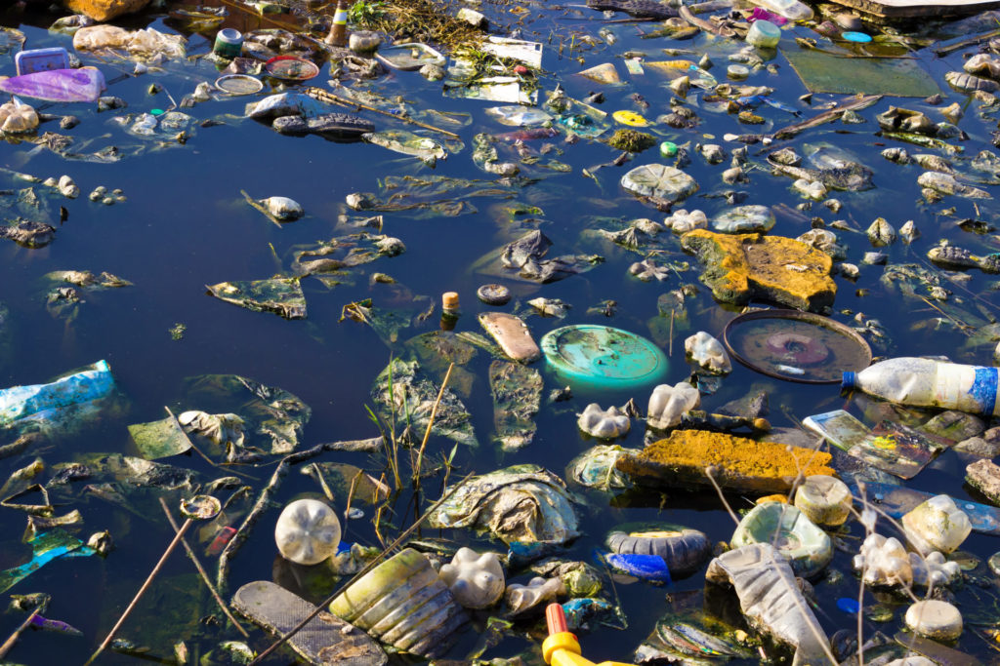
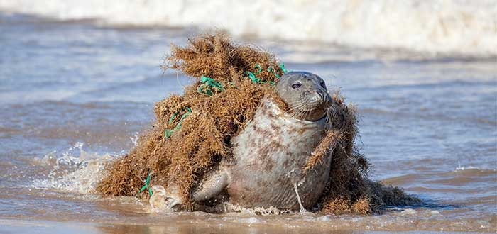

| Las causas de la contaminación del agua |
- Calentamiento Global
- Deforestación
- Trafico Maritimo
- Derrames de Combustibles
 |
|
| Consecuencias de la contaminación |
- Destrucción de la Biodiversidad
- contaminación de la Cadena Alimentaria
- Escasez de Agua Potable
- Mortalidad Infantil
- Enfermedades

|
|
| Soluciones para la contaminación del agua |
- Limitar el uso de plasticos de un solo uso
- Reducir la emisiones del CO2
- Disminuir y depurar todas las aguas residuales
- Fomentar la pesca sostenible
|
|